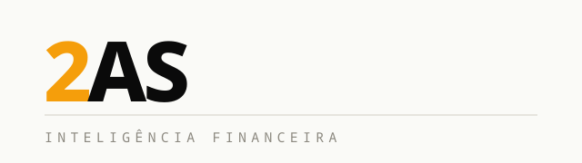
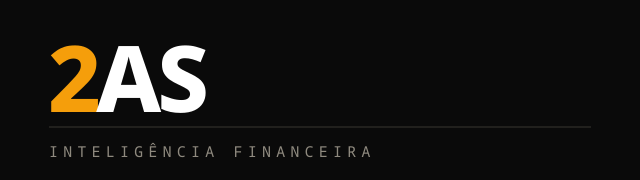
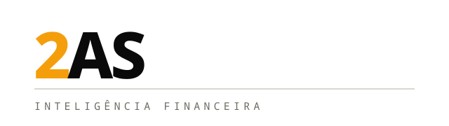
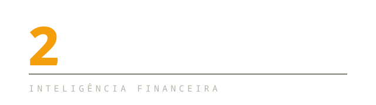
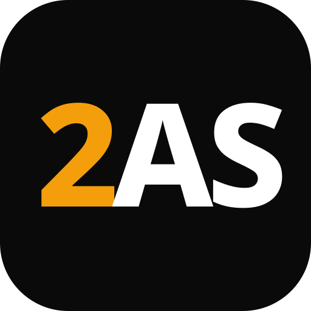
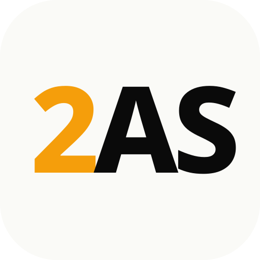
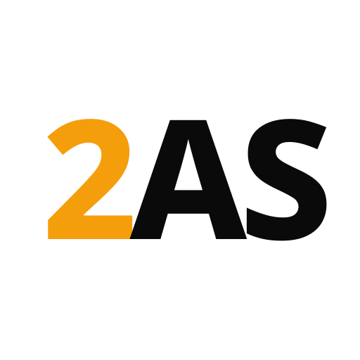

Logotipo completo
A assinatura oficial
da 2AS.
Use sempre a versão adequada ao fundo. SVG é o formato preferencial; PNG atende aplicações rápidas; PDF é indicado para impressão.











Símbolo e avatares
Reconhecimento em espaços compactos.

Símbolo principal



Símbolo claro



Transparente escuro



Transparente claro


Kits prontos
Baixe por necessidade.
Kit Digital
SVGs, PNGs, ícones e avatares para site, redes sociais e apresentações.
Baixar kitKit Impressão
Logotipos em SVG e PDF vetorial para documentos e materiais gráficos.
Baixar kitKit da Marca
Todos os formatos, variações, ícones, redes sociais e guia rápido de uso.
Baixar kitUso correto
Consistência antes de variação.
Não alterar as cores oficiais.
Não distorcer ou comprimir a marca.
Não aplicar sombras, contornos ou efeitos.
Não substituir a tipografia da assinatura.
Não usar uma versão sem contraste suficiente.
Preservar espaço livre ao redor do logotipo.